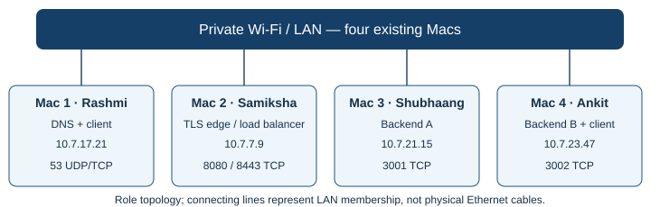
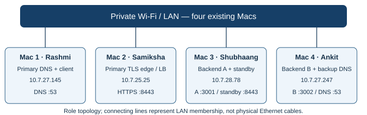

COMPUTER NETWORKS · TEAM SCOUT REGIMENT
Four Macs on the same private LAN. A client resolves a private .test name, validates HTTPS at nginx, and receives a response from one of two simple REST backends.

| Machine / member | Role | Historical IP / service | Cloud analogy |
|---|---|---|---|
| Mac 1 / Rashmi | DNS + client | 10.7.17.21:53 | Managed DNS |
| Mac 2 / Samiksha | TLS edge / load balancer | 10.7.7.9:8443 | Application load balancer |
| Mac 3 / Shubhaang | Backend A | 10.7.21.15:3001 | App instance A |
| Mac 4 / Ankit | Backend B + client | 10.7.23.47:3002 | App instance B |
1 Client → Mac 1 DNS (UDP 53): app.team1.test → edge address 2 Client ephemeral port → Mac 2 TCP 8443: SYN / SYN-ACK / ACK 3 Client ↔ Mac 2: TLS handshake, identity and trust validation 4 Client → edge: HTTP request inside encrypted TLS records 5 Edge → Backend A:3001 OR Backend B:3002: ordinary LAN HTTP 6 Backend → edge: JSON, X-Backend, relevant cache headers 7 Edge → client: response over the established encrypted channel
| Protocol | Course layer mapping | Observable evidence |
|---|---|---|
| DNS / HTTP | Application | Query/answer; curl request/response headers |
| TLS | Above TCP, below HTTP; session/transport mapping | Handshake and valid certificate identity/trust |
| TCP / UDP | Transport | Socket pair, ports, SEQ/ACK, receiver window |
| IP | Network | Client/server private IPv4 addresses |
| Ethernet / Wi-Fi | Link | Interface/MAC addresses, local LAN membership |
The client needs the service hostname and edge address returned by DNS. It does not need backend addresses. DNS resolution is separate from opening a socket and validating the TLS identity.
Current /api/cache-demo returns the same representation and ETag on both backends. A matching conditional request returns 304. /api/status is no-store, so balancing/failover observations reach the service.
TLS 1.3 encrypts handshake messages after ServerHello. Capture a controlled trusted TLS 1.2 request for the literal visible Certificate exhibit; preserve the TLS 1.3 explanation and encrypted-data evidence too.
The same infrastructure is extended with backup DNS, TTL experiments, isolation, backend HA and a controlled standby edge. Current addresses were supplied for this session and must be checked again on each Mac.

| Machine / member | Phase 2 service role | Current IP / ports |
|---|---|---|
| Mac 1 / Rashmi | Primary DNS + client | 10.7.27.145 — DNS :53 |
| Mac 2 / Samiksha | Primary edge / TLS / LB | 10.7.25.25 — HTTPS :8443 |
| Mac 3 / Shubhaang | Backend A + standby (P2) | 10.7.28.78 — A :3001 / standby :8443 |
| Mac 4 / Ankit | Backend B + backup DNS (P2) | 10.7.27.247 — B :3002 / DNS :53 |
app.team1.test → 10.7.25.25 api.team1.test → 10.7.25.25 ttl.team1.test → 10.7.25.25 Configured local TTL: 30 seconds
A DNS: client has Mac 1 primary and Mac 4 backup resolver B CACHE: authoritative NEW can coexist with client-cached OLD C GUARD: only Mac 2 may connect to backend ports during C D HA: A stops → successful B-only responses → A rejoins E EDGE: synchronized DNS cutover → valid standby on Mac 3 F DIAGNOSE: DNS → TCP → TLS → edge HTTP → allowed backend
| Extension | Required observation |
|---|---|
| A — backup DNS | Primary stopped, fresh system lookup/HTTPS, backup query receipt, restore |
| B — TTL / flush | Natural OLD→NEW expiry; separate manual OLD→NEW before expiry |
| C — isolation | Edge allowed, client denied, HTTPS works, owned-anchor/token rollback |
| D — backend HA | A/B baseline, A-down B-only 200, recovered A/B |
| E — cutover | Standby valid; cached-old/fresh-new window; convergence and both-DNS restore |
| F — challenge | Actual live faculty fault isolated/fixed with layer reasoning |
The primary edge still requires manual DNS migration. Automatic redundancy needs a second always-on edge plus a floating virtual IP or automatic DNS failover. LAN/router connectivity remains shared. This project requires no new hardware or cloud runtime.
Code and diagrams are not live evidence. The reviewed acceptance ledger tracks outstanding measured results; faculty challenge and individual viva remain live evaluation requirements.